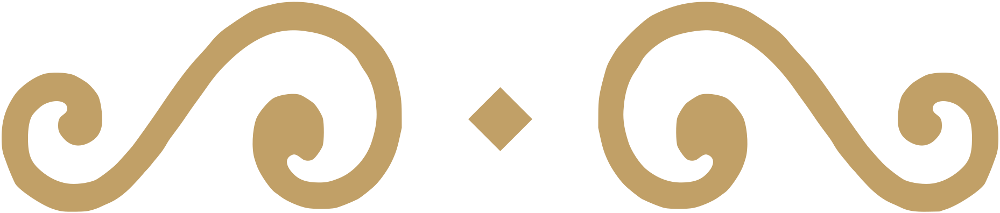

יכוון לקיים מצות תפילה, כי מצות צריכות כוונה.1

יתבונן שהשכינה כנגדו, ועומדים לפני מלך מלכי המלכים הקב״ה, שחוקר כל מחשבות וכוונות.2
יחשוב מרוממותו ית׳, שהוא רם ונשא שוכן עד וכל יכול.3
יתבונן בשפלות האדם, שצריך רחמים מרובים בכל רגע.4
יחשוב כאילו עומד עתה בבהמ״ק בקה״ק לפני הכפרת.5
יתפלל דרך תחנונים כעני בפתח, שנצרך מאד, ומבקש רחמים לפני המלך.6
וישים אל לבו שאין שום נברא – מלאך או אדם – שיכול למלאות שאלתו כי אם ע״י רצונו של הקב״ה.7
מראי מקומות: 1ע׳ מ״ב סי׳ ק״ו ס״ק ד׳ וסי׳ ס׳ ס״ק י׳. 2שו״ע סי׳ צ״ח סעי׳ א׳. 3ע״פ הרמ״א שם. 4שם. 5שו״ע סי׳ צ״ה סעי׳ ב׳, וסי׳ צ״ד מ״ב ס״ק ג׳ וז׳. 6סי׳ צ״ח סעי׳ ג׳. 7שם מ״ב ס״ק ח׳.
עצה טובה – לעבוד על אחד מהסעיפים במשך שבוע,
ולאחר שיתרגל להוסיף עוד סעיף.
ולאחר שיתרגל להוסיף עוד סעיף.
קו ׳בית הוראה׳: 077.215.00.94קו קול הלשון: 0733718376
לעילוי נשמת אליהו ז״ל בן יבדלחט״א חיים מאיר עזריאל